Geschichten für Kinder von 3 bis 8
Jede Geschichte beginnt mit einer echten Kinderfrage: über Natur, Tiere, Umwelt und unser Miteinander. Mit Fiete, Lotte und Paco, zum Vorlesen, zum Anhören und zum Lesen üben.
 Familienvielfalt
FamilienvielfaltEin Haus voller Familien
Alle sind unterschiedlich und jeder gehört dazu Biber und ihre Dämme
Biber und ihre DämmeBiber in Not
Ein kleiner Baumeister braucht große Hilfe Igel im Winter
Igel im WinterEin Winterbett für den kleinen Igel
Eine herbstliche Geschichte über kleine Entdeckungen und einen Garten voller Leben Plastik im Meer
Plastik im MeerDas Regenbogenboot auf Rettungsfahrt
Wie gemeinsames Handeln das Meer schützt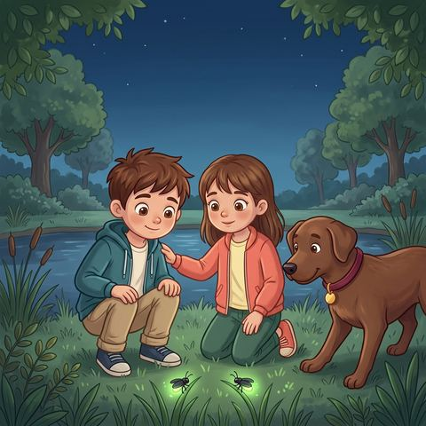
Tiere der NachtWenn die Tiere der Nacht erwachen
Eine Nachtmission im Stadtpark Blind unterwegs
Blind unterwegsMit Franzi zum Spielplatz
Wie blinde Menschen ihren Weg finden Reparieren statt wegwerfen
Reparieren statt wegwerfenPacos Lieblingsball
Teamwork im Reparaturcafé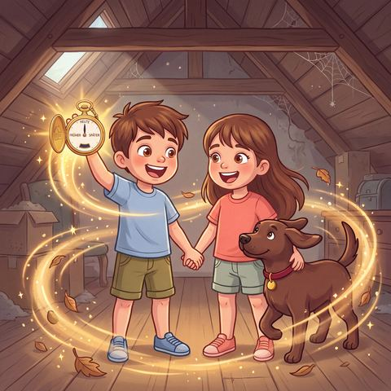
Saubere FlüsseVom grauen Fluss zum grünen Ufer
Wie Menschen einem Fluss sein Leben zurückgeben Strom speichern
Strom speichernVolle Batterie fürs Lichterfest
Wie eine Busbatterie Licht ins Dunkel bringt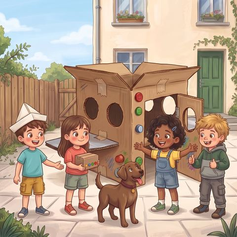
Mut und FreundschaftDas Raumschiff mit der offenen Tür
Eine Geschichte über Mut, Freundschaft und ein Abenteuer für alle Ehrlichkeit
EhrlichkeitDas war ich, Herr Berg
Eine Geschichte über Ehrlichkeit und den Mut, einen Fehler zuzugeben Gewinnen und verlieren
Gewinnen und verlierenLos, Handballfüchse!
Lotte und Junas erstes Handballturnier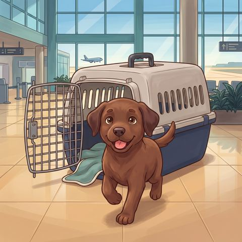
Ein Hund aus dem TierschutzIch bin Paco
Wie ich vom Strand auf Zypern zu meiner Familie kam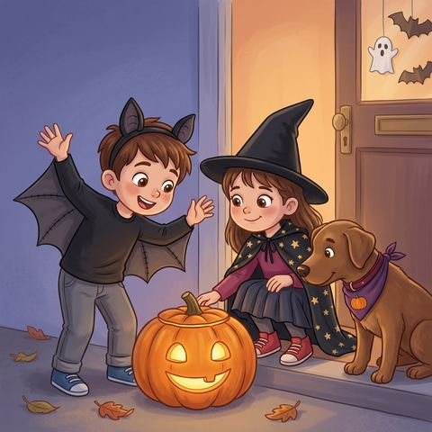
Halloween für alleEin Gruselfest für alle
Ein bisschen Grusel und ganz viel Miteinander Wasserkreislauf
WasserkreislaufDer reisende Regentropfen
Warum Wasser immer unterwegs ist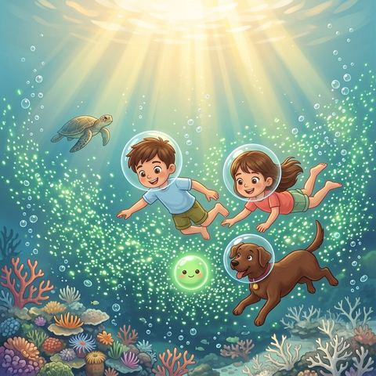
Sauerstoff aus dem MeerPiko und der Atem des Meeres
Warum das Meer die Lunge der Erde ist Wildbienen
WildbienenDas Apfelfest
Wie Wildbienen aus Blüten Früchte entstehen lassen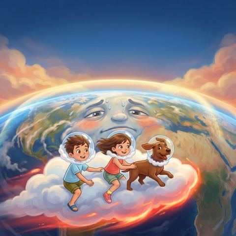
KlimawandelDie verschwitzte Erde
Von dicker Luft und kleinen Klimaschritten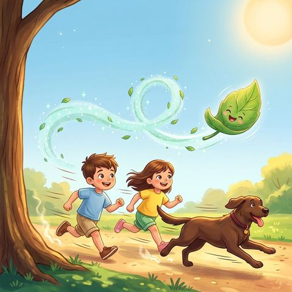
Hitze, Schatten und BäumeDer heißeste Tag des Sommers
Warum Schatten, Wasser und Bäume so wichtig sind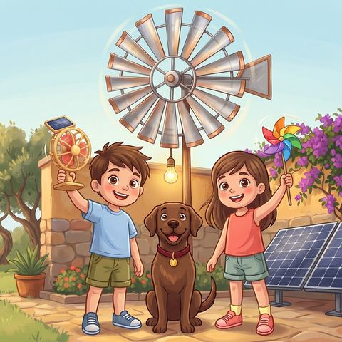
Strom aus Sonne und WindDie Kraft von Sonne und Wind
Wie Sonne und Wind sauberen Strom erzeugen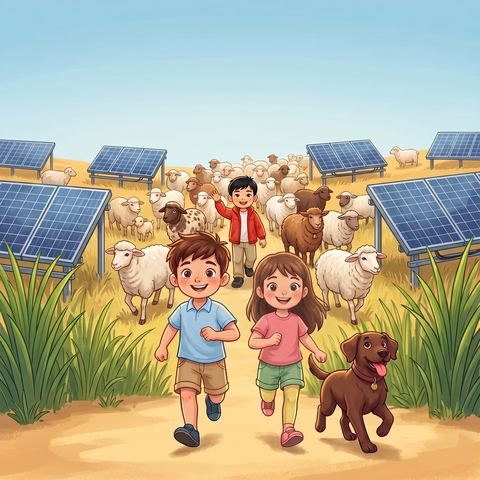
SolarstromSchafalarm im Sonnenfeld
Ein wolliger Einsatz für sauberen Strom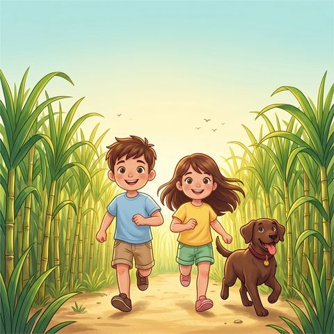
Energie aus PflanzenDas Dorf voller Sonnenkraft
Wie Zuckerrohr Sonne speichert und ein Dorf versorgt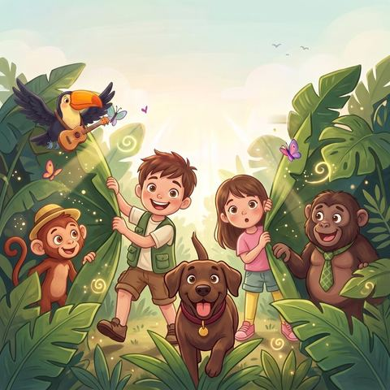
RegenwaldDas verlorene Brüllaffenlied
Ein Abenteuer hoch oben in den Baumkronen Krummes Gemüse
Krummes GemüseDie krumme Karotte darf mit
Warum krummes Gemüse genauso lecker ist Lebensmittel retten
Lebensmittel rettenDie Rettungsküche
Wie gemeinsames Kochen Lebensmittel rettet Altglas-Recycling
Altglas-RecyclingDie Reise eines Marmeladenglases
Wie Altglas zu neuen Gläsern wirdAlle Geschichten gibt es in der Aha Kids App.